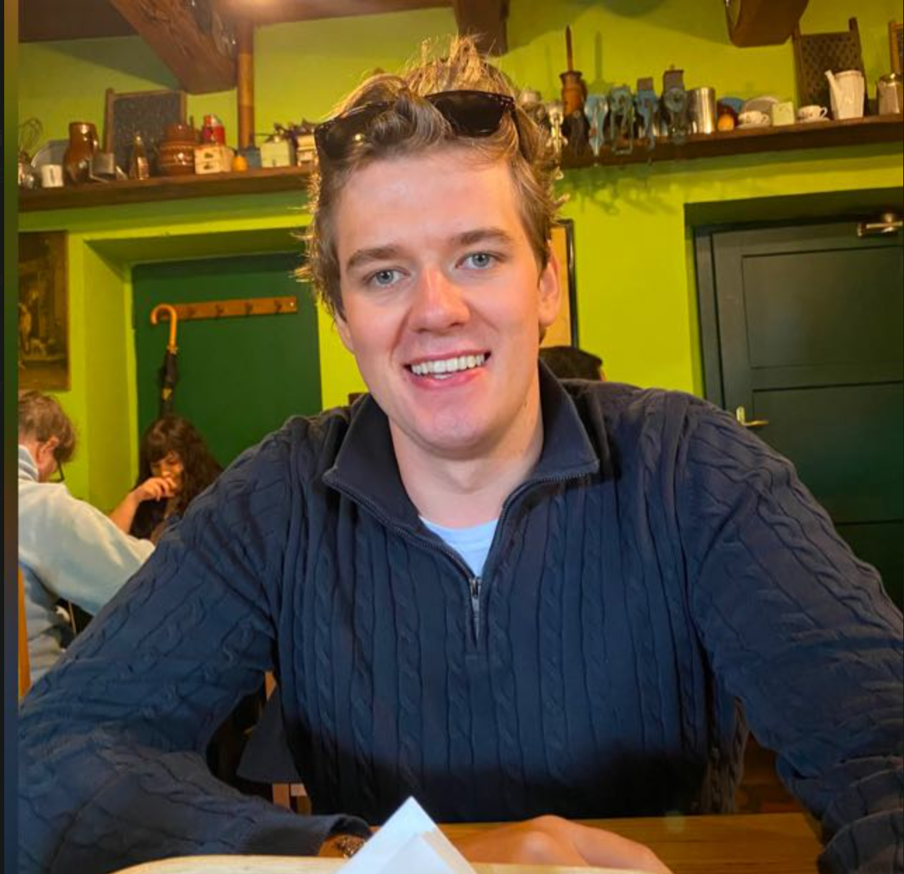

Prosjektgruppen bak praksisoppgaven hos IK Start.

Kort beskrivelse av Øyvind sin rolle og bidrag i prosjektet kommer her.
Kort beskrivelse av Sivert sin rolle og bidrag i prosjektet kommer her.
Kort beskrivelse av Filip sin rolle og bidrag i prosjektet kommer her.